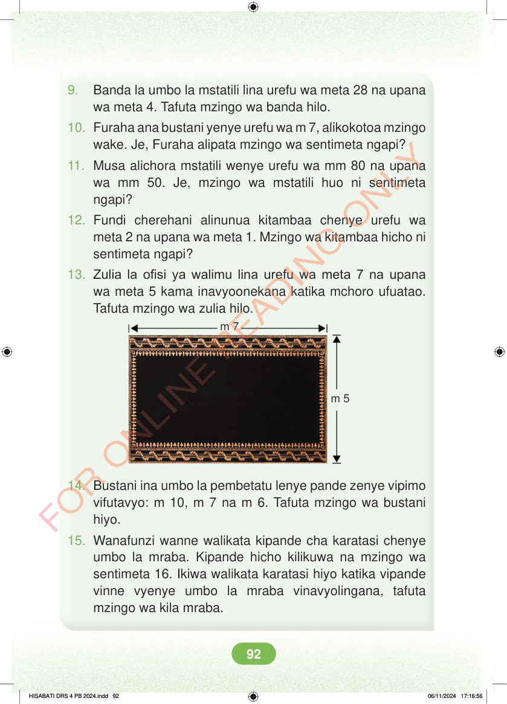

<!DOCTYPE html>
<html lang="sw-TZ"><head><meta charset="utf-8"><meta name="viewport" content="width=device-width,initial-scale=1">
<title>Hisabati: Kitabu cha Mwanafunzi Darasa la Nne</title>
<meta name="title-id" content="pg098_sec001"><meta name="page-section-id" content="102">
<link href="./content/tailwind_output.css" rel="stylesheet"><link href="./assets/libs/fontawesome/css/all.min.css" rel="stylesheet"><link href="./assets/fonts.css" rel="stylesheet">
<style>body{margin:0;background:#eef1ed}main{width:100%;display:flex;justify-content:center;padding:1rem 1rem 5rem;box-sizing:border-box}#content{width:100%;display:flex;justify-content:center}.pdf-page{position:relative;width:min(calc(100vw - 2rem),56rem);aspect-ratio:540.8980102539062/750.6610107421875;background:white;box-shadow:0 4px 24px #0002;overflow:hidden}.pdf-page img{position:absolute;inset:0;width:100%;height:100%;object-fit:fill}</style>
</head><body><main><h1 class="sr-only" id="page-heading">Ukurasa wa 98</h1><div id="content" class="opacity-0"><section role="article" data-section-type="pdf_accessible_page" data-section-id="pg098_sec001" aria-labelledby="page-heading" class="pdf-page"><p class="sr-only" data-id="pg098_gp001_tx001">9. Banda la umbo la mstatili lina urefu wa meta 28 na upana wa meta 4. Tafuta mzingo wa banda hilo. 10. Furaha ana bustani yenye urefu wa m 7, alikokotoa mzingo wake. Je, Furaha alipata mzingo wa sentimeta ngapi? 11. Musa alichora mstatili wenye urefu wa mm 80 na upana wa mm 50. Je, mzingo wa mstatili huo ni sentimeta ngapi? 12. Fundi cherehani alinunua kitambaa chenye urefu wa meta 2 na upana wa meta 1. Mzingo wa kitambaa hicho ni sentimeta ngapi? 13. Zulia la ofisi ya walimu lina urefu wa meta 7 na upana wa meta 5 kama inavyoonekana katika mchoro ufuatao. Tafuta mzingo wa zulia hilo. m 7 m 5 14. Bustani ina umbo la pembetatu lenye pande zenye vipimo vifutavyo: m 10, m 7 na m 6. Tafuta mzingo wa bustani hiyo. 15. Wanafunzi wanne walikata kipande cha karatasi chenye umbo la mraba. Kipande hicho kilikuwa na mzingo wa sentimeta 16. Ikiwa walikata karatasi hiyo katika vipande vinne vyenye umbo la mraba vinavyolingana, tafuta mzingo wa kila mraba. HISABATI DRS 4 PB 2024.indd 92 HISABATI DRS 4 PB 2024.indd 92 06/11/2024 17:16:56 06/11/2024 17:16:56</p></section></div></main><div class="relative z-50" id="interface-container"></div><div class="relative z-50" id="nav-container"></div><script src="./assets/offline-preloader.js?v=audiofix-20260824-1"></script><script src="./assets/scorm.js"></script><script src="./assets/base.bundle.local.js?v=audiofix-20260824-1"></script></body></html>